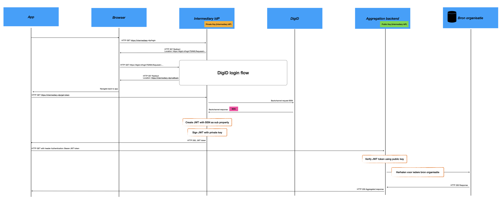
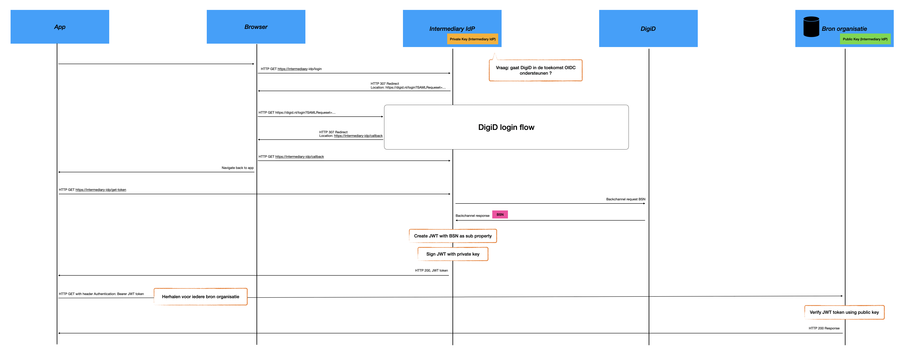
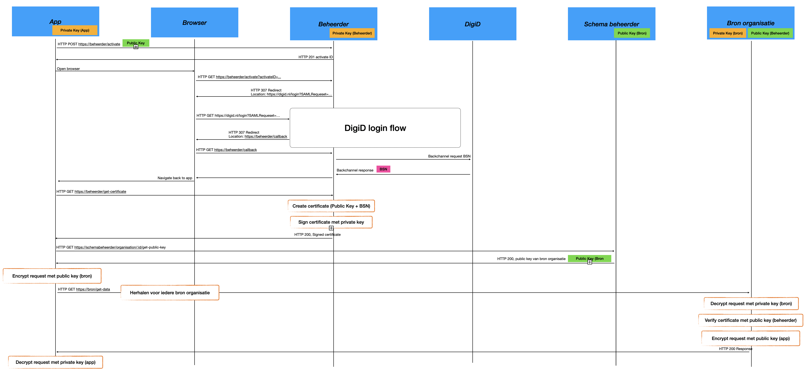

De TransparantieApp heeft als doel om inzichtelijk te maken hoe de data van de burger/bedrijf verwerkt wordt door de overheid, bijvoorbeeld bij totstandkoming van besluiten. Als de overheid een besluit maakt, dan gebruikt het daarbij de gegevens van de burger/bedrijf in combinatie met andere bronnen en past er een bewerking op toe (algoritme) om tot een resultaat te komen. Al deze stappen zijn verwerkingen van gegevens. Deze verwerkingen worden bijgehouden (gelogd) als de overheidsorganisatie de standaard Logboek Dataverwerkingen adopteert. De TransparantieApp is bedoeld om de logs die met de standaard zijn gemaakt, weer te geven. En om standaard uit te breiden met “regels” voor het lezen van logging.
Status van dit document
Dit is een werkversie die op elk moment kan worden gewijzigd, verwijderd of vervangen door andere documenten. Het is geen stabiel document.
1. Introductie
Dit onderdeel is niet normatief.
De overheid verwerkt enorme hoeveelheden burgerdata, bijvoorbeeld bij het nemen van besluiten. Op individueel niveau is echter niet altijd duidelijk welke data wordt gebruikt bij besluitvorming. Er bestaan standaarden zoals het Logboek Dataverwerkingen, Nen-normen en EU-Dataspaces die vastleggen hoe data worden verwerkt en hoe beslissingen tot stand komen. Het toegankelijk maken van deze informatie voor het brede publiek, met oog voor privacybelangen van alle betrokkenen, is een grote uitdaging.
Om dit doel te bereiken willen we een standaard voor het lezen van logging voor transparantie besluitvorming definieren en een App bouwen, de TransparantieApp die van deze standaard gebruik maakt. In een simulatieomgeving die automatisch informatie ophaalt en inzichtelijk maakt uit een al bestaand logbestand zoals bijvoorbeeld een logbestand gemaakt met Logboek Dataverwerkingen. Logboek Dataverwerkingen is een standaard voor overheden waarmee zij vastleggen hoe zij gegevens verwerken (ook wel 'loggen'). Hierdoor kunnen overheden transparant maken wat er met gegevens gebeurt, zowel binnen hun eigen organisatie als in samenwerking met andere instanties. De App is vergelijkbaar met de Vorderingenoverzicht Rijk-app (vorijk.nl) en sluit aan bij het overheidsbeleid rondom data-uitwisseling, zoals vastgelegd in de Nederlandse Digitaliseringsstrategie. De App haalt zijn data direct bij de bron via API's, werkt volledig op basis van open standaarden en legt nadruk op privacy van de burger door de data alleen bij de burger samen te brengen.
1.1 Leeswijzer
2. Lessen VO-Rijk
2.1 Methode ontwikkeling
2.2 Software architectuur
2.3 Interactie ontwerp/UX Design
2.4 herbruikbaarheid voor TransparantieApp
3. Randvoorwaarden uit beleidsjuridischkader
3.1 randvoorwaarde 1
4. Gebruikerswensen voor TransparantieApp
TODO: wat voor relevante onderzoeken zijn er al gedaan naar gebruikswensen bij transparantie in besluitvorming? Wat kunnen we daaruit leren voor de TransparantieApp en lezen logging standaard?
5. Standaard voor lezen logging
5.1 Scope standaard
5.2 Methode ontwikkeling standaard
5.3 Requirements aan standaard
5.4 Open API Specification(OAS) voor lezen API
5.5 Lezen extensie logboek dataverwerkingen
6. Applicatie architectuur
6.1 Context
Deze context beschrijft de randvoorwaarden voor de TransparantieApp die burgers en bedrijven inzicht
geeft in hoe hun gegevens worden gebruikt door verschillende overheidsorganisaties, zonder dat
deze organisaties hun data of verantwoordelijkheid uit handen geven.
Er zijn meerdere bronorganisaties
Elke bronorganisatie:
Beheert eigen data
Houdt eigen logs bij van dataverwerkingen
Is zelf verantwoordelijk voor juistheid, volledigheid en autorisatie van haar data
Blijft autonoom in technische inrichting en beheer
Een dataverwerking is bijvoorbeeld:
Inzien van (persoons)gegevens
Wijzigen van (persoons)gegevens
Afhankelijk van het detailniveau kan een logregel zowel metadata als concrete data bevatten. [LDV]
Over alle organisaties heen wordt BSN of RSIN gebruikt als identificatie kenmerk
Het doel is: Een geconsolideerd overzicht tonen aan een persoon of bedrijf van alle dataverwerkingen over alle bronorganisaties heen.
Elke organisatie biedt een API waarmee logs kunnen worden opgevraagd op basis van BSN/RSIN.
Gebruik bijvoorkeur OIDC. OIDC staat op de "Pas toe of leg uit" lijst van standaarden [FSAUTH]. Ook SAML staat op deze lijst, maar het idee is om naar OIDC toe te migreren.
6.2 Architectuuroplossingen
In dit hoofdstuk worden meerdere architectuuroplossingen beschreven die het mogelijk maken om
dataverwerkingen uit verschillende bronorganisaties te ontsluiten en te presenteren in één
geconsolideerd overzicht.
De oplossingsrichtingen verschillen met name op de volgende aspecten:
Plaats van aggregatie: centraal op een backend of decentraal in de client.
Complexiteit: implementatie- en beheerslast voor frontend, backend en bronorganisaties.
Client-ondersteuning: toepasbaarheid voor webapplicaties, native apps of beide.
Mate van standaardisatie: aansluiting bij gangbare standaarden zoals OIDC versus
maatwerkoplossingen.
De lijst met architectuuroplossingen is niet per definitie volledig. Andere oplossingen zijn mogelijk en een definitie keuze is op dit moment nog niet gemaakt.
De browser of mobiele app communiceert met één centrale backend, de aggregation backend. Deze backend:
Roept alle organisatie-API’s server-to-server aan
Aggegreert de logs
Geeft één geconsolideerd resultaat terug
6.2.1.2 Sequence diagram

Figuur 1
Sequence diagram van de aggregation architectuur
6.2.1.3 Gedetailleerde flow
Applicatie opent een browser ten behoeve van login sessie
Via de intermediary IdP (Identity Provider) wordt een DigiD login sessie gestart
Intermediary IdP vertaald de SAML interface van DigiD naar een OIDC
Intermediary IdP wordt overbodig zodra DigiD OIDC aanbiedt
Applicatie vraagt een JWT token op
JWT token wordt verrijkt met een BSN nummer in het sub veld
Normalisatie & filtering
Aggregatie backend:
Haalt bij alle deelnemende bron organisaties de log verwerkingen op
Filtert eventueel per autorisatie
Sorteert op tijd of type verwerking etc.
Response
Frontend ontvangt één resultaat bericht
6.2.1.4 Voor- en nadelen
Voordelen
Geschikt voor zowel web- als native applicaties
Geen CORS headers nodig bij webapplicatie.
Eenvoudige frontend implementatie.
Functionaliteit eenvoudig aan te bieden vanuit meerdere clients (web, native app, etc).
Open standaarden, tried-and-tested security model
Nadelen
Aggregation backend is single point of failure.
Aggregation backend heeft toegang tot het totaal overzicht alle log gegevens.
Partieel resultaat tonen tijdens inladen lastiger te realiseren. Eventueel mogelijk door het streamen van newline delimited JSON via chucked HTTP maar dat maakt zowel de frontend als backend complexer.
6.2.1.5 Wanneer geschikt?
Centrale aggregatie van log verwerkingen op backend geen bezwaar
Eenvoudige frontend prioriteit
BSN verwerking op frontend geen bezwaar
6.2.2 Architectuuroplossing 2: Token gebaseerd (JWT) met decentrale aggregatie
6.2.2.1 Kernidee
Na authenticatie ontvangt de client een JWT dat:
Ondertekend is door de identity provider.
Iedere organisatie kan verifiëren op echtheid.
Iedere organisatie levert alleen zijn eigen logs terug. De frontend roept meerdere organisatie-API’s direct aan.
6.2.2.2 Sequence diagram

Figuur 2
Sequence diagram van de JWT architectuur
6.2.2.3 Gedetailleerde flow
Applicatie opent een browser ten behoeve van login sessie
Via de intermediary IdP (Identity Provider) wordt een DigiD login sessie gestart
Intermediary IdP vertaald de SAML interface van DigiD naar een OIDC
Intermediary IdP wordt overbodig zodra DigiD OIDC aanbiedt
Applicatie vraagt een JWT token op
JWT token wordt verrijkt met een BSN nummer in het sub veld API-calls per organisatie
Client-side aggregatie
Frontend combineert resultaten
Sorteert en presenteert overzicht
6.2.2.4 Voor- en nadelen
Voordelen
Geschikt voor zowel web- als native applicaties
Geen centrale backend applicatie waarin alle log verwerkingen samen komen
Open standaarden, tried-and-tested security model
Nadelen
Complexiteit bij frontend:
Meerdere HTTP verzoeken. Het aantal te bevragen bronorganisaties bepaald het aantal te versturen HTTP verzoeken.
Foutafhandeling en retries van mislukte HTTP calls. Eventueel data partieel tonen indien een deel van de verzoeken is geslaagd en een deel is mislukt.
CORS headers noodzakelijk om HTTP Headers cross-origin te kunnen versturen.
CORS headers dienen ingesteld te worden bij iedere deelnemende organisatie
Dit nadeel is niet van toepassing als de client een native app is
Aggregatie code leeft in de frontend en zal per client (web, native, etc) opnieuw geïmplementeerd moeten worden.
De public key wordt opgestuurd naar een beheer-applicatie.
Na authenticatie retourneert de beheer-applicatie een certificaat (= public key + BSN + signature)
Iedere bron-organisatie kan het certificaat verifiëren op echtheid.
Iedere organisatie levert alleen zijn eigen logs terug
Communicatie tussen app en bronorganisatie is versleuteld via mTLS verbinding. (Opmerking: onduidelijk of dit boven op HTTPS is, óf in plaats van)
De frontend roept meerdere organisatie-API’s direct aan
6.2.3.2 Sequence diagram

Figuur 3
Sequence diagram van de VORIJK architectuur
6.2.3.3 Voor- en nadelen
Voordelen
Geen centrale backend applicatie waarin alle log verwerkingen samen komen
Slechts éénmalig inloggen bij DigiD. Gegevens worden daarna uitgewisseld op basis van het uitgegeven certificaat welke wordt opgeslagen op de telefoon van de gebruiker.
Nadelen
Complexiteit bij frontend:
Meerdere calls
Foutafhandeling
Extra stappen om
Certificaat wordt éénmalig aangemaakt in activatie stap en dient daarna opgeslagen te worden op de client t.b.v. vervolg sessies
Public private key pairs gegeneerd op de client. Alle communicatie tussen bron organisatie en app gebruikt dezelfde key pair. Geen forward secrecy zoals bij een standaard HTTPS verbinding met DHE.
Enkel te gebruiken voor een native-app
Aggregatie code leeft in de frontend en zal per client (web, native, etc) opnieuw geïmplementeerd moeten worden.
Afwijkend van open standaarden zoals SAML of OIDC.
Onduidelijk hoe keys worden geroteerd, (is er functionaliteit vergelijkbaar met Key Id in JWT tokens beschikbaar?)
Onduidelijk hoe een uitgegeven certificaat ge-revoked kan worden.
Authorisatie mogelijkheden beperkt: het certificaat bevat een BSN nummer en enkel data betreffende deze BSN is toegankelijk. Ook een ambtenaar kan geen toegang krijgen tot data, behalve de data gekoppeld aan zijn eigen BSN.
6.3 Vergelijking
Aspect
Backend aggregatie
JWT
VO-RIJK
BSN in frontend
Ja
Ja
Ja
Log gegevens centraal verwerkt
Ja
Nee
Nee
Aggregatie
Backend
Frontend
Frontend
Complexiteit frontend
Laag
Gemiddeld
Hoog
Compatibel met type clients
Web & Native
Web & Native
Native
6.3.1 Nog niet bekeken alternatieven
6.3.1.1 JWT token zonder BSN
In de variant “backend aggregatie architectuur” kan het BSN nummer in het JWT token vervangen worden door een pseudo-anonieme identifier. Het BSN nummer hoeft dat niet gecommuniceerd te worden met de frontend.
6.3.1.2 DigiD App in plaats van Browser
Inloggen met DigiD kan via app2app [DIGIDAPP2APP]. De gebruiker maakt dan geen uitstapje naar de webbrowser maar een uitstapje naar de DigiD app. Er zijn twee varianten beschreven via SAML en via OIDC. Echter de OIDC variant is nog niet algemeen beschikbaar:
Noot: Deze aansluitvorm is nog niet algemeen beschikbaar voor dienstaanbieders.
Naast onderdelen die als niet normatief gemarkeerd zijn, zijn ook alle diagrammen, voorbeelden, en noten in dit document niet normatief. Verder is alles in dit document normatief.